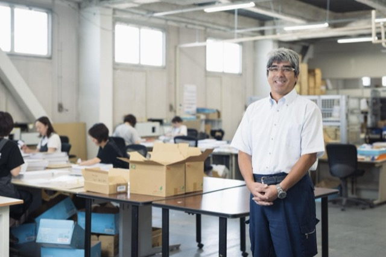
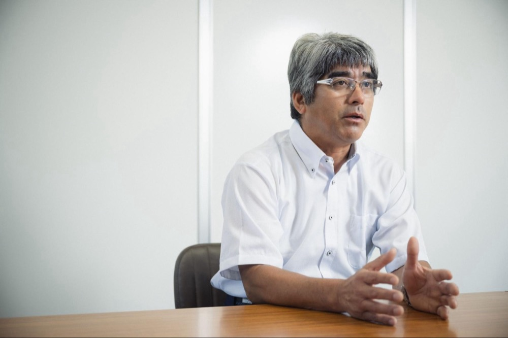
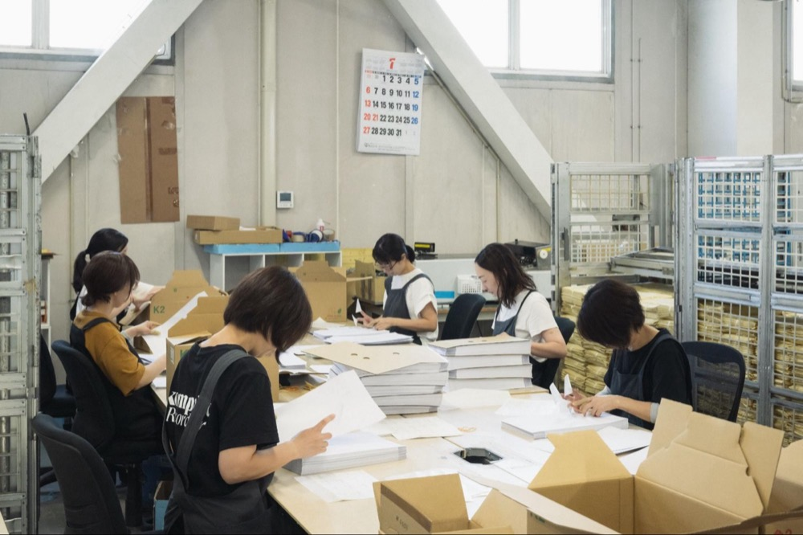
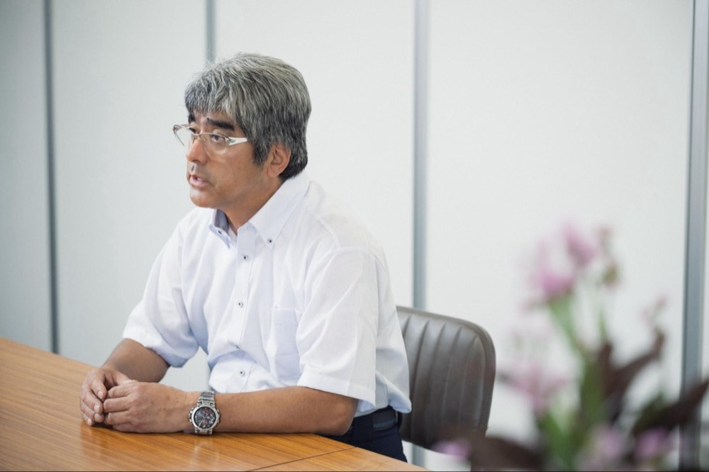
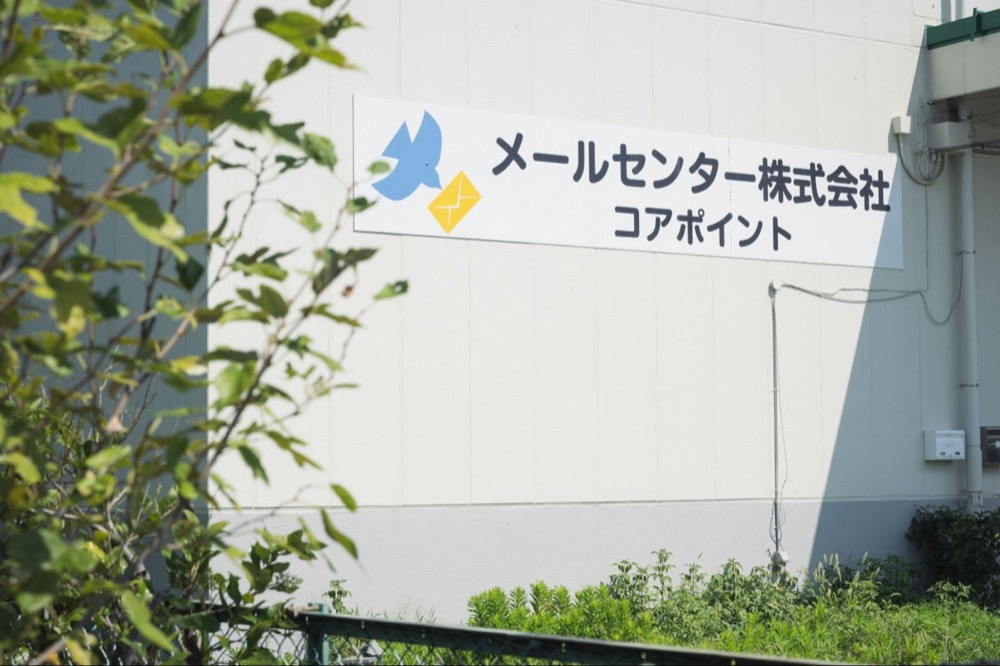

柏市にあるDM発送のスペシャリスト
有場 正人Masato Ariba
メールセンター株式会社 代表取締役
1981年佐賀県立佐賀工業高等学校を卒業。同年に八雲製作所（本社：佐賀県）に入社。1985年佐川急便に入社、2005年株式会社KTSを複数名で立ち上げ専務取締役に就任。2011年メールセンター株式会社を設立、代表取締役、現在に至る。
企業サイトを見るTRACK 01
柏市にあるDM発送のスペシャリスト

東京に隣接しながら、歴史と文化の香りを残す千葉県柏市。縄文の貝塚に始まり、北原白秋や永井荷風ら文人が愛した街は、いまや再開発が進む都市と梨園の面影が共存する場となった。
DM発送代行を手がける、メールセンター株式会社が、その街の一角にある。印刷から封入、郵便番号区分、結束、差出までを自社で一気通貫させる希少な現場だ。創業から10年以上が経過した今、約50名体制で、年間数千万通もの宛名をさばく。
そんなメールセンター株式会社の現場に漂う空気は、どこか家庭的であたたかい。この空気をつくったのが代表取締役・有場正人だ。
TRACK 02
「助け合いが当たり前の職場でありたい」

佐賀県生まれの彼は、男ばかり6人兄弟という賑やかな家に育った。「あまり裕福な暮らしはできなかったけれど、母はいつも笑っていましてね」そう語る表情には、幼い日を明るく照らした母の苦労への感謝がにじむ。
18歳で上京。製造業、運送業と職を渡り歩き、40代でDM業界へ。やがて前職の社長に背中を押され、独立を志すことになる。
しかし道は平坦ではなかった。共に立ち上げた先輩に裏切られ、受注の多くを失う痛恨の一撃を食らう。追い打ちをかけるようにコロナ禍で最大顧客が撤退した。


TRACK 03
一視同仁
有場の経営哲学は「まず自分の体と家族を優先、最後に会社」というかたちだ。出勤時間はフレキシブルに設定が可能で、子どもの送り迎えをしてからの出社も構わない。昼下がりには決まって15分のリフレッシュタイムがある。コーヒーの香りが漂う休憩室で、社員たちは和気あいあいと談笑する。一視同仁…全員に同じ温度で向き合う座右の銘が、ここで生きている。
そんなメールセンターの強みは、DMの一貫処理に加え、細かい作業への対応力にある。特に不動産関係のDMでは、マンション別に内容が異なる場合でも正確にマッチングさせる技術を持つ。過去には国勢調査の封入作業や、同じ種類のトレーディングカードが偏って入ってしまわないようにランダムに封入する作業など、高度なマッチング技術を要する仕事も請け負ってきた。